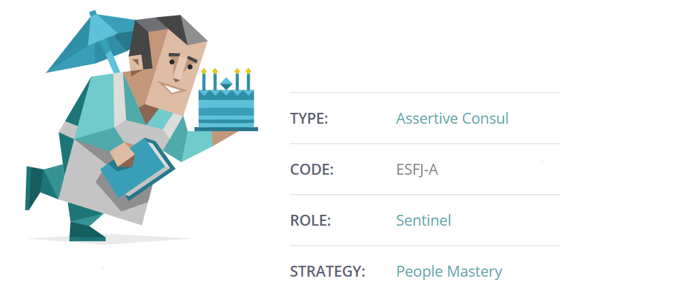
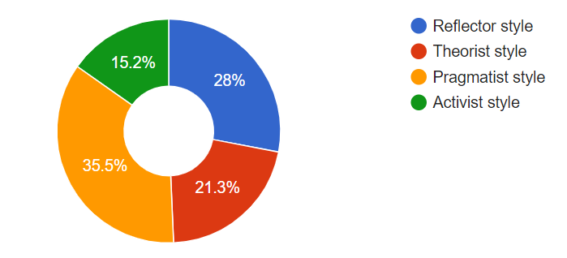
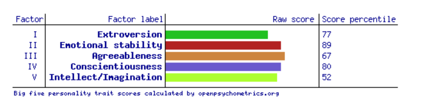

My name is Saajid Muhammed and my background is Fijian, but I was born in Australia. I am currently in RMIT university. My student email address is s3918368@student.rmit.edu.au, and my student number is s3918368. I only speak English. I am currently training in MMA, which is mixed martial arts.
Below are some tests that show some statistics of what type of person I am. The first test I took was the Myer-Briggs test, which is a psychometric survey made to assess psychological preferences in how people make decisions and see the world. According to the results, I am of the Consul type, which means I lead my team forward, to success, and I also support friends and make sure everyone is happy, I also take responsibility in doing the right thing. My code, meaning my five dominant traits, is ESFJ-A, which stands for: extraverted (E), observant (S), feeling (F), judging (J) and assertive (-A). My role is a Sentinel, meaning I am cooperative, practical, grounded and I also feel comfortable with who I am. My Strategy is people mastery, meaning I can handle stress and that I act boldly and confidently. I think these traits and qualities would most definitely help me work productively in a team, and that I would benefit from others, and they would benefit from me. These qualities should be considered when forming a team as being supportive, cooperative and confident are traits each member should have for the group to be successful.
The second test I took was the Learning Styles quiz, which showed that my main learning style was the pragmatist style, which mean that I prefer practicals, discussions and problem solving. Pragmatists are more likely to be confident and straight to the point. These qualities are also good to have when working in groups, as discussing is a main component in group working. These qualities will not affect my behaviour when working in a group.
The last test I took was the Big Five Personality test, which shows that my two strongest traits are my emotional stability and Conscientiousness, which basically means that I’m careful and diligent. These traits will affect my behaviour positively when working in a group, as diligence in my work will ensure that everything is done properly.
My interest in IT started when I was about the age of 14, which is the age when I started to bring more technology into my life. One of my main interest in IT is to know how our everyday technologies work on the inside. I am also interested in the coding and processes, which bring new technologies to ‘life’. All the different job possibilities through an IT degree are quite overwhelming, especially since IT is the way our world is going. Some of the job possibilities are computer programmer, web developer, IT technician, system analysist and many more. I have had no official IT experience throughout my life yet but will hopefully encounter many in the future. I chose to come to RMIT university as the IT degree which they offered seemed to be a lot more detailed and relatable compared to other universities I looked at. From this course in RMIT I aim to gain skills in coding, software development and getting familiar with programming in different languages.
Description: Software engineering includes developing systems and software, improving systems and enhancing applications by identifying opportunities for improvement. Products created by software engineers could include network control systems, business applications, games, operating systems, robots and many more. How do they do this? They use programming languages, frameworks, servers, databases and other technologies to turn their ideas into final products. Being a software engineer may require one to work individually or with other users so that one can determine other user’s software needs. I aim to obtain all skills required to become a software engineer through the course at RMIT. This job at https://www.talentinternational.com.au/job/software-engineer-13/ appeals to me as it includes developing software firmware, which is one of the things I would like to in the future. In this job, formal qualifications in engineering or software engineer are essential. Skills in system designing, programming skills, software development, etc.